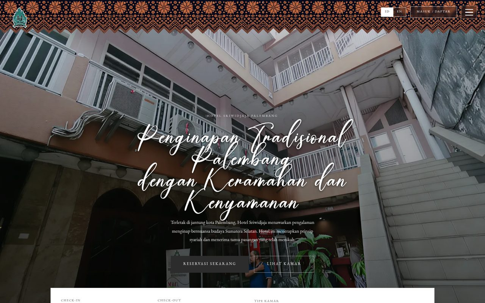

Open projectWebsite
Hotel Sriwidjaja
The website of Hotel Sriwidjaja, a traditional lodging on Jalan Letkol Iskandar in central Palembang, with a separate admin panel for the staff.
- Purpose
- Lets guests look through the rooms and book online, and gives staff one place to confirm payments and manage each stay.
- Key features
-
- Three-step booking: dates and room, guest details, then payment
- Pay by QRIS (BCA or e-wallet) and upload the transfer receipt, or pay at the cashier
- Guest accounts with booking status and history
- Admin panel to confirm or reject payments and check guests in and out
- Indonesian and English
- Built with
-
- HTML
- CSS
- JavaScript
- localStorage
The version here is an offline build: bookings are kept in the browser instead of the original Express API, so a booking made on the guest site shows up in the admin panel.
- My contribution
- Designed and developed the website from scratch while working at the hotel as IT & Web Administrator.